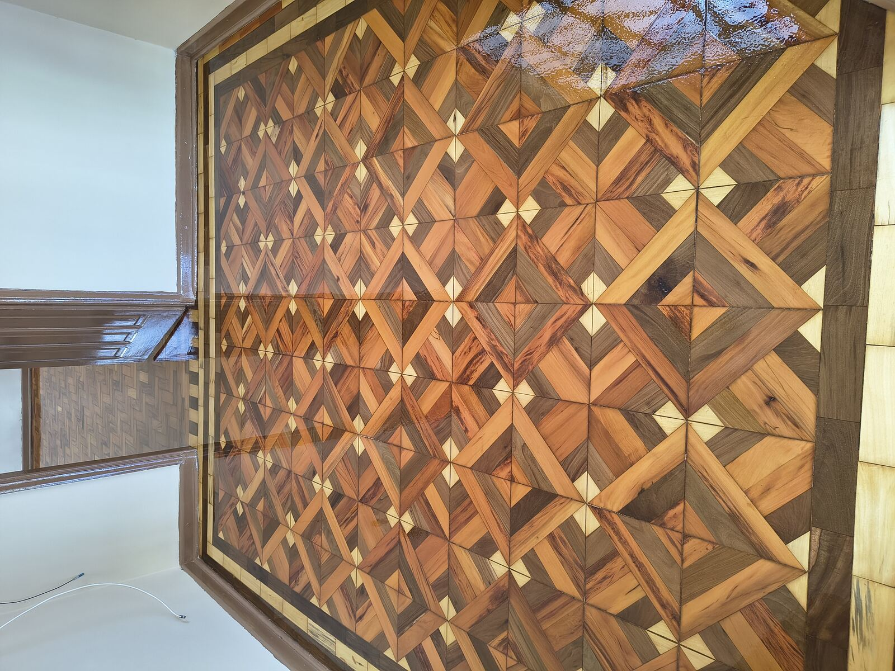
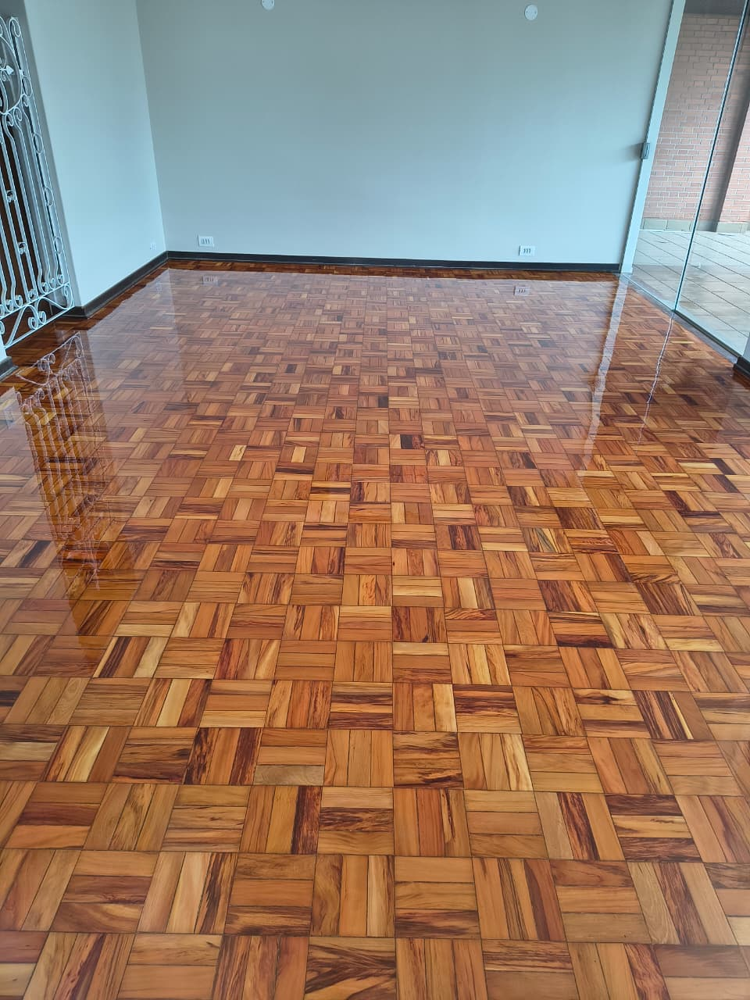
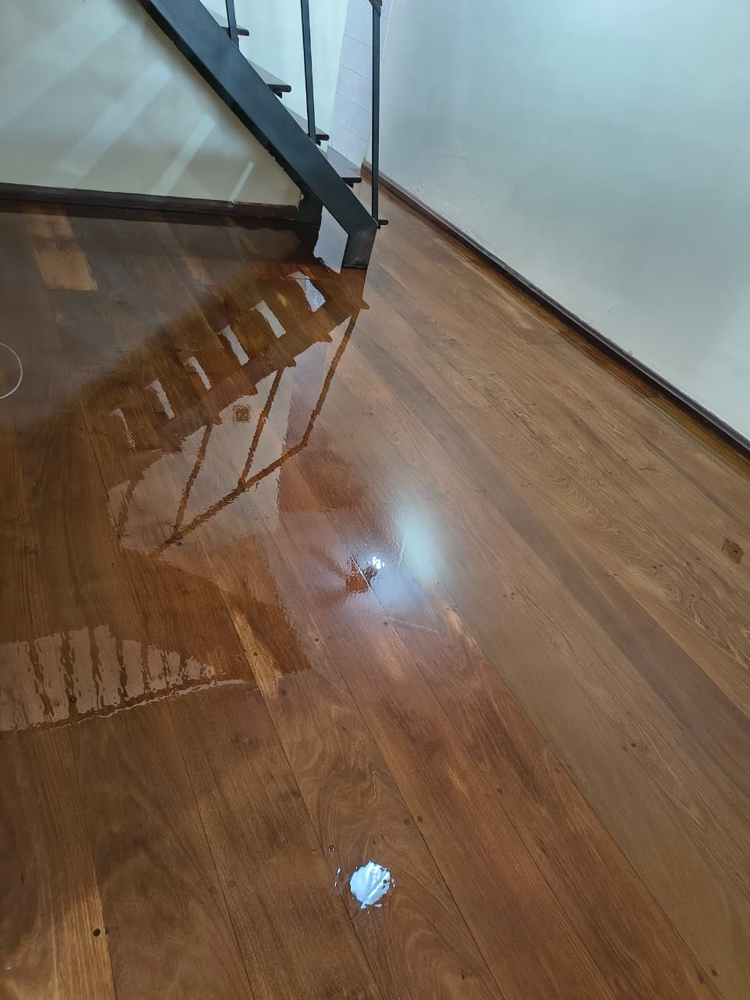
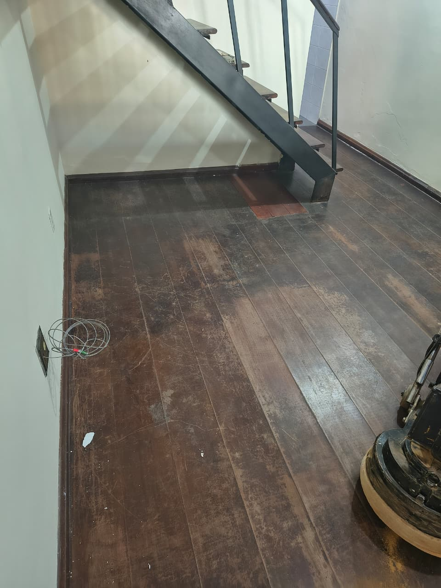
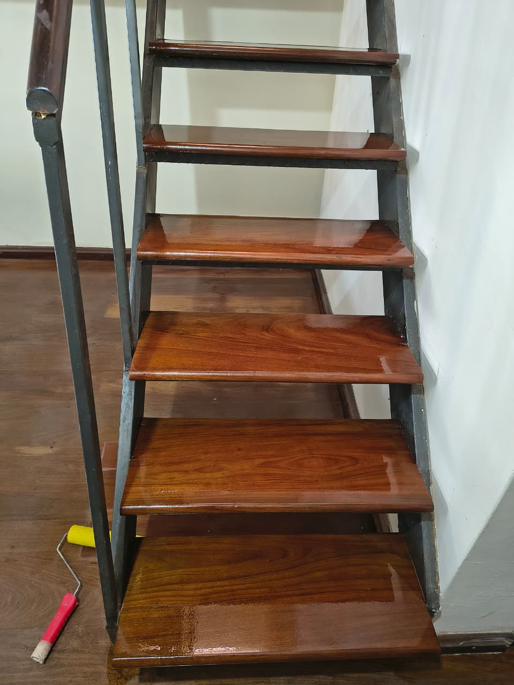
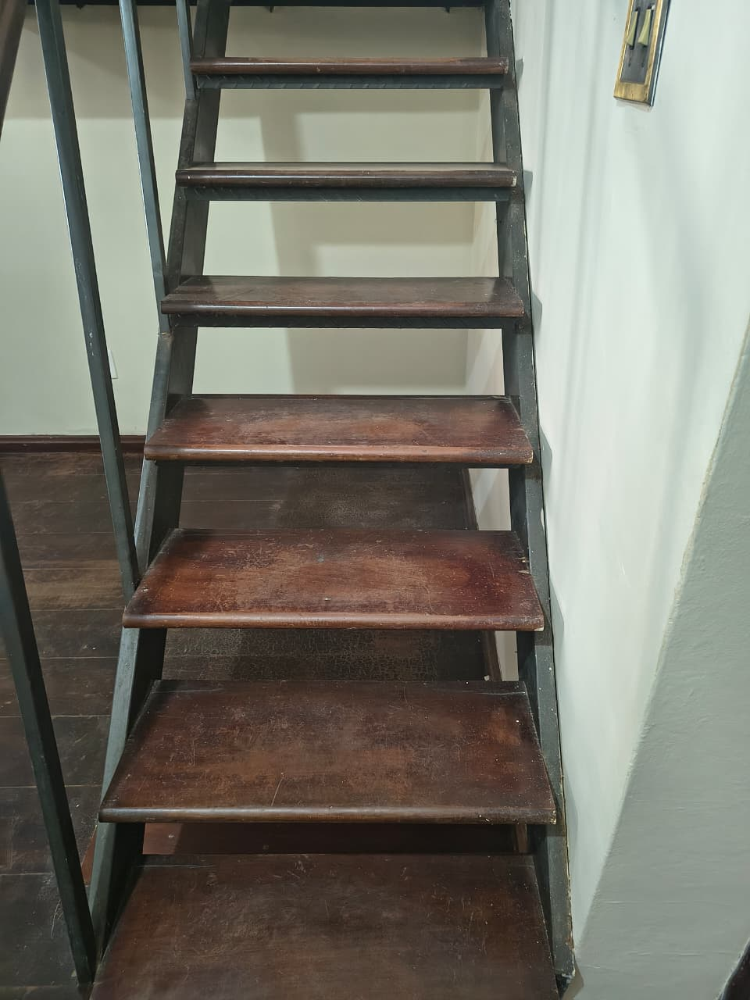
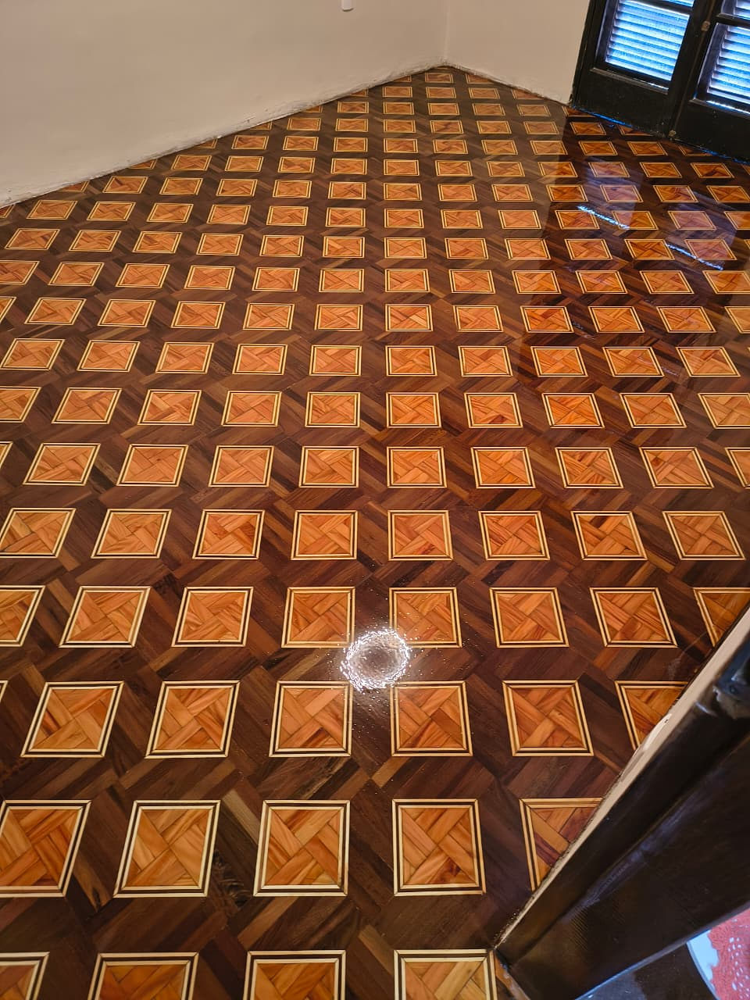
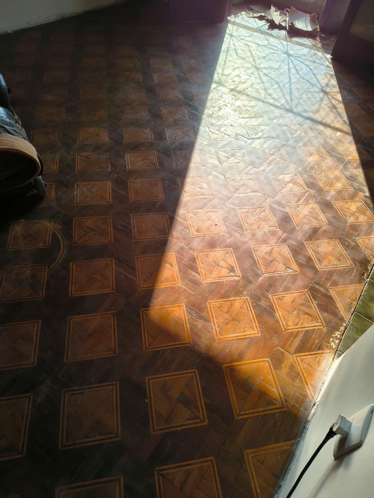

Sala de entradaTaco em desenho de losango

QuartoAssoalho raspado e envernizado

Sala amplaTaco mesclado, alto brilho

Sala amplaTaco mesclado — antes do serviço ser realizado

Integração de ambientesTaco restaurado entre dois cômodos

salaTaco de peroba raspado e envernizado

Sala de entradaAssoalho raspado e envernizado

SalaAssoalho — antes do serviço ser realizado

EscadaEscada — após o serviço

EscadaEscada — Antes do serviço ser realizado

QuartoTaco raspado e envernizado

QuartoTaco — antes do serviço ser realizado